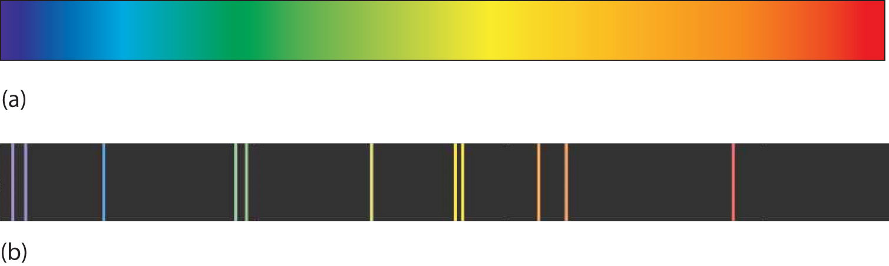
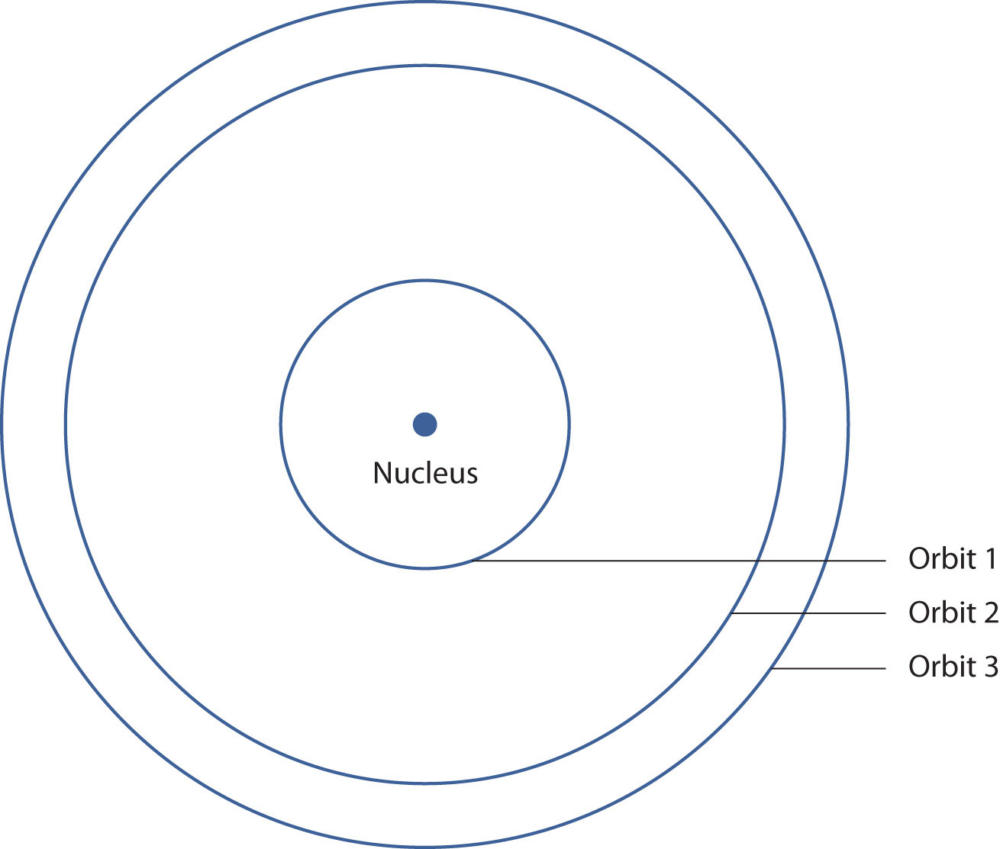

There are two fundamental ways of generating light: either heat an object up so hot it glows or pass an electrical current through a sample of matter (usually a gas). Incandescent lights and fluorescent lights generate light via these two methods, respectively.
A hot object gives off a continuum of light. We notice this when the visible portion of the electromagnetic spectrum is passed through a prism: the prism separates light into its constituent colors, and all colors are present in a continuous rainbow (part (a) in Figure 8.3 "Prisms and Light"). This image is known as a continuous spectrumAn image that contains all colors of light.. However, when electricity is passed through a gas and light is emitted and this light is passed though a prism, we see only certain lines of light in the image (part (b) in Figure 8.3 "Prisms and Light"). This image is called a line spectrumAn image that contains only certain colors of light.. It turns out that every element has its own unique, characteristic line spectrum.
Figure 8.3 Prisms and Light
(a) A glowing object gives off a full rainbow of colors, which are noticed only when light is passed through a prism to make a continuous spectrum. (b) However, when electricity is passed through a gas, only certain colors of light are emitted. Here are the colors of light in the line spectrum of Hg.
Why does the light emitted from an electrically excited gas have only certain colors, while light given off by hot objects has a continuous spectrum? For a long time, it was not well explained. Particularly simple was the spectrum of hydrogen gas, which could be described easily by an equation; no other element has a spectrum that is so predictable (Figure 8.4 "Hydrogen Spectrum"). Late-nineteenth-century scientists found that the positions of the lines obeyed a pattern given by the equation
where n = 3, 4, 5, 6,…, but they could not explain why this was so.
Figure 8.4 Hydrogen Spectrum

The spectrum of hydrogen was particularly simple and could be predicted by a simple mathematical expression.
In 1913, the Danish scientist Niels Bohr suggested a reason why the hydrogen atom spectrum looked this way. He suggested that the electron in a hydrogen atom could not have any random energy, having only certain fixed values of energy that were indexed by the number n (the same n in the equation above and now called a quantum numberAn index that corresponds to a property of an electron, like its energy.). Quantities that have certain specific values are called quantizedWhen a quantity is restricted to having only certain values. values. Bohr suggested that the energy of the electron in hydrogen was quantized because it was in a specific orbit. Because the energies of the electron can have only certain values, the changes in energies can have only certain values (somewhat similar to a staircase: not only are the stair steps set at specific heights but the height between steps is fixed). Finally, Bohr suggested that the energy of light emitted from electrified hydrogen gas was equal to the energy difference of the electron’s energy states:
This means that only certain frequencies (and thus, certain wavelengths) of light are emitted. Figure 8.5 "Bohr’s Model of the Hydrogen Atom" shows a model of the hydrogen atom based on Bohr’s ideas.
Figure 8.5 Bohr’s Model of the Hydrogen Atom
Bohr’s description of the hydrogen atom had specific orbits for the electron, which had quantized energies.
Bohr’s ideas were useful but were applied only to the hydrogen atom. However, later researchers generalized Bohr’s ideas into a new theory called quantum mechanicsThe theory of electrons that treats them as a wave., which explains the behavior of electrons as if they were acting as a wave, not as particles. Quantum mechanics predicts two major things: quantized energies for electrons of all atoms (not just hydrogen) and an organization of electrons within atoms. Electrons are no longer thought of as being randomly distributed around a nucleus or restricted to certain orbits (in that regard, Bohr was wrong). Instead, electrons are collected into groups and subgroups that explain much about the chemical behavior of the atom.
In the quantum-mechanical model of an atom, the state of an electron is described by four quantum numbers, not just the one predicted by Bohr. The first quantum number is called the principal quantum numberThe index that largely determines the energy of an electron in an atom. Represented by . (n). The principal quantum number largely determines the energy of an electron. Electrons in the same atom that have the same principal quantum number are said to occupy an electron shellA term used to describe electrons with the same principal quantum number. of the atom. The principal quantum number can be any nonzero positive integer: 1, 2, 3, 4,….
Within a shell, there may be multiple possible values of the next quantum number, the angular momentum quantum numberAn index that affects the energy and the spatial distribution of an electron in an atom. Represented by ℓ. (ℓ). The ℓ quantum number has a minor effect on the energy of the electron but also affects the spatial distribution of the electron in three-dimensional space—that is, the shape of an electron’s distribution in space. The value of the ℓ quantum number can be any integer between 0 and n − 1:
ℓ = 0, 1, 2,…, n − 1Thus, for a given value of n, there are different possible values of ℓ:
| If n equals | ℓ can be |
|---|---|
| 1 | 0 |
| 2 | 0 or 1 |
| 3 | 0, 1, or 2 |
| 4 | 0, 1, 2, or 3 |
and so forth. Electrons within a shell that have the same value of ℓ are said to occupy a subshellA term used to describe electrons in a shell that have the same angular momentum quantum number. in the atom. Commonly, instead of referring to the numerical value of ℓ, a letter represents the value of ℓ (to help distinguish it from the principal quantum number):
| If ℓ equals | The letter is |
|---|---|
| 0 | s |
| 1 | p |
| 2 | d |
| 3 | f |
The next quantum number is called the magnetic quantum numberThe index that determines the orientation of the electron’s spatial distribution. Represented by . (mℓ). For any value of ℓ, there are 2ℓ + 1 possible values of mℓ, ranging from −ℓ to ℓ:
−ℓ ≤ mℓ ≤ ℓor
The following explicitly lists the possible values of mℓ for the possible values of ℓ:
| If ℓ equals | The values can be |
|---|---|
| 0 | 0 |
| 1 | −1, 0, or 1 |
| 2 | −2, −1, 0, 1, or 2 |
| 3 | −3, −2, −1, 0, 1, 2, or 3 |
The particular value of mℓ dictates the orientation of an electron’s distribution in space. When ℓ is zero, mℓ can be only zero, so there is only one possible orientation. When ℓ is 1, there are three possible orientations for an electron’s distribution. When ℓ is 2, there are five possible orientations of electron distribution. This goes on and on for other values of ℓ, but we need not consider any higher values of ℓ here. Each value of mℓ designates a certain orbitalThe specific set of principal, angular momentum, and magnetic quantum numbers for an electron.. Thus, there is only one orbital when ℓ is zero, three orbitals when ℓ is 1, five orbitals when ℓ is 2, and so forth. The mℓ quantum number has no effect on the energy of an electron unless the electrons are subjected to a magnetic field—hence its name.
The ℓ quantum number dictates the general shape of electron distribution in space (Figure 8.6 "Electron Orbitals"). Any s orbital is spherically symmetric (part (a) in Figure 8.6 "Electron Orbitals"), and there is only one orbital in any s subshell. Any p orbital has a two-lobed, dumbbell-like shape (part (b) in Figure 8.6 "Electron Orbitals"); because there are three of them, we normally represent them as pointing along the x-, y-, and z-axes of Cartesian space. The d orbitals are four-lobed rosettes (part (c) in Figure 8.6 "Electron Orbitals"); they are oriented differently in space (the one labeled has two lobes and a torus instead of four lobes, but it is equivalent to the other orbitals). When there is more than one possible value of mℓ, each orbital is labeled with one of the possible values. It should be noted that the diagrams in Figure 8.6 "Electron Orbitals" are estimates of the electron distribution in space, not surfaces electrons are fixed on.
Figure 8.6 Electron Orbitals

(a) The lone s orbital is spherical in distribution. (b) The three p orbitals are shaped like dumbbells, and each one points in a different direction. (c) The five d orbitals are rosette in shape, except for the orbital, which is a “dumbbell + torus” combination. They are all oriented in different directions.
The final quantum number is the spin quantum numberThe index that indicates one of two spin states for an electron. Represented by . (ms). Electrons and other subatomic particles behave as if they are spinning (we cannot tell if they really are, but they behave as if they are). Electrons themselves have two possible spin states, and because of mathematics, they are assigned the quantum numbers +1/2 and −1/2. These are the only two possible choices for the spin quantum number of an electron.
Of the set of quantum numbers {n, ℓ, mℓ, ms}, which are possible and which are not allowed?
Solution
Test Yourself
Of the set of quantum numbers {n, ℓ, mℓ, ms}, which are possible and which are not allowed?
Answers
A neon light is basically an electrified tube with a small amount of gas in it. Electricity excites electrons in the gas atoms, which then give off light as the electrons go back into a lower energy state. However, many so-called “neon” lights don’t contain neon!
Although we know now that a gas discharge gives off only certain colors of light, without a prism or other component to separate the individual light colors, we see a composite of all the colors emitted. It is not unusual for a certain color to predominate. True neon lights, with neon gas in them, have a reddish-orange light due to the large amount of red-, orange-, and yellow-colored light emitted. However, if you use krypton instead of neon, you get a whitish light, while using argon yields a blue-purple light. A light filled with nitrogen gas glows purple, as does a helium lamp. Other gases—and mixtures of gases—emit other colors of light. Ironically, despite its importance in the development of modern electronic theory, hydrogen lamps emit little visible light and are rarely used for illumination purposes.
Differentiate between a continuous spectrum and a line spectrum.
Under what circumstances is a continuous spectrum formed? Under what circumstances is a line spectrum formed?
What is the wavelength of light from the hydrogen atom spectrum when n = 3?
What is the wavelength of light from the hydrogen atom spectrum when n = 5?
What are the restrictions on the principal quantum number?
What are the restrictions on the angular momentum quantum number?
What are the restrictions on the magnetic quantum number?
What are the restrictions on the spin quantum number?
What are the possible values for ℓ when n = 5?
What are the possible values for ℓ when n = 1?
What are the possible values for mℓ when ℓ = 3?
What are the possible values for mℓ when ℓ = 6?
Describe the shape of an s orbital.
Describe the shape of a p orbital.
Which of these sets of quantum numbers is allowed? If it is not, explain why.
Which of these sets of quantum numbers is allowed? If it is not, explain why.
A continuous spectrum is a range of light frequencies or wavelengths; a line spectrum shows only certain frequencies or wavelengths.
6.56 × 10−7 m, or 656 nm
The principal quantum number is restricted to being a positive whole number.
The absolute value of mℓ must be less than or equal to ℓ: |mℓ| ≤ ℓ.
ℓ can be 0, 1, 2, 3, or 4.
mℓ can be −3, −2, −1, 0, 1, 2, or 3.
An s orbital is spherical in shape.